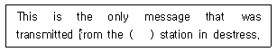
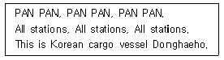
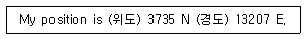
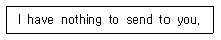
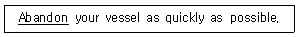
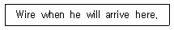
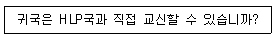
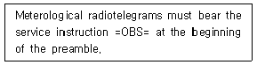
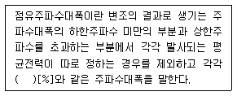

전파전자기능사(구) (2010-10-10 기출문제)
1과목: 임의 구분
1. AM 송신기의 구성 요소 중 반송파를 만드는 부분은?
- 발진부
- 증폭부
- 복조부
- 주파수 체배부
(정답률: 알수없음)

2. 슈퍼헤테로다인 수신기에서 1,000[kHz]의 전파를 수신하고 있을 때 국부 발진 주파수가 1,500[kHz] 라면 중간 주파수는 얼마인가?
- 455 [kHz]
- 500 [kHz]
- 1,455 [kHz]
- 1,500 [kHz]
(정답률: 알수없음)
3. FM 수신기와 AM 수신기에 공통으로 사용되는 것은?
- 리미터
- 주파수 변별기
- 국부 발진기
- 스켈치 회로
(정답률: 알수없음)
4. FM 수신기에 있어서 전송 도중에 생기는 진폭성잡음을 억제하기 위하여 주파수 변별기 앞에 설치하는 회로는?
- 진폭제한기
- 스켈치회로
- 자동주파수제어(AFC)회로
- 순시주파수편이제어(IDC)회로
(정답률: 알수없음)
5. 어떤 전송시스템에서 코드효율이 1이고, 전체효율이 0.8일 때 전송효율은?
- 1.8
- 1
- 0.8
- 0.2
(정답률: 알수없음)
6. 다음 중 정보 비트의 전송률이 일정할 때 채널 대역 폭이 가장 좁은 변조 방식은?
- 2진 ASK
- 4진 FSK
- QPSK
- 8진 QAM
(정답률: 알수없음)
7. 주간과 야간의 전리층 내 전자밀도의 변화에 대한 설명으로 적합한 것은?
- 주간이 높고, 야간이 낮다.
- 주간이 낮고, 야간이 높다.
- 주·야간이 같다.
- 주·야간에 관계없다.
(정답률: 알수없음)
8. 단파통신이 원거리 통신에 적합한 이유로 타당한 것은?
- 직접파로 전파되기 때문에
- 지표면을 따라 전파되기 때문에
- 직접파와 지표면을 따라 전파되기 때문에
- 전리층 반사를 이용하여 전파되기 때문에
(정답률: 알수없음)
9. 다음 중 초단파(VHF)의 주파수 범위로 옳은 것은?
- 3[kHz] ~ 30[kHz]
- 30[kHz] ~ 300[kHz]
- 30[MHz] ~ 300[MHz]
- 0.3[GHz] ~ 3[GHz]
(정답률: 알수없음)
10. 다음 중 장·중파의 수신 전계강도 측정 및 방향 탐지용에 사용되는 안테나는?
- 야기 안테나
- 더블릿 안테나
- 루프 안테나
- 수직 접지 안테나
(정답률: 알수없음)
11. 다음 마이크로파 안테나 중 가장 대역폭이 큰 것은?
- 파라볼라 안테나
- 혼 리플렉터 안테나
- 카세그레인 안테나
- 롬빅 안테나
(정답률: 알수없음)
12. 비동조 급전선에 관한 설명 중 틀린 것은?
- 장거리 전송에 적합하다.
- 정합장치가 필요하다.
- 급전선상에 진행파가 존재한다.
- 급전선상에 정재파가 존재한다.
(정답률: 알수없음)
13. 저궤도 위성의 특징이 아닌 것은?
- 지상 200[km] ~ 6000[km]에 떠 있는 위성이다.
- 위성의 속도는 지구의 자전속도와 같다.
- 사진 정찰 등 군사용으로 유용하다.
- 위성 이동 통신용으로 활용할 수 있다.
(정답률: 알수없음)
14. 다음 중 위성통신에서 사용되는 다원 접속방식이 아닌 것은?
- FDMA
- TDMA
- CDMA
- SCPC
(정답률: 알수없음)
15. AM 수신기의 감도 측정 시 주의해야 할 사항으로 잘못된 것은?
- 표준신호발생기의 출력 임피던스와 의사공중선을 정합하는 경우 삽입손실을 -3[dB]로 한다.
- 의사공중선은 수신기의 종류에 따라 적당한 것을 선정해야 한다.
- 각 부의 접지는 완전하게 한다.
- 외부 잡음의 영향을 받지 않도록 한다.
(정답률: 알수없음)
16. 내부잡음이 없을 경우에 수신기의 이상적인 잡음 지수(F)는?
- F = 0
- F = 1
- F = 10
- F = ∞
(정답률: 알수없음)
17. 반파장 다이폴 안테나의 실효인덕턴스(Le)가 25[H], 실효정전용량(Ce)이 4[F]일 때 고유주파수 (fo)의 값은? (단, π=3.14로 계산하시오.)
- 약 0.0016[Hz]
- 약 0.016[Hz]
- 약 0.19[Hz]
- 약 0.019[Hz]
(정답률: 알수없음)
18. 공중선 길이가 78.5m인 반파장 다이폴 공중선의 실효길이는 약 몇 m 인가?
- 10 [m]
- 25 [m]
- 50 [m]
- 100 [m]
(정답률: 알수없음)
19. 수직 접지안테나에서 저항 손실이 대부분을 차지하는 것은?
- 접지 저항
- 도체 저항
- 유전체손
- 코로나손
(정답률: 알수없음)
20. 특성 임피던스 Zo = 90[Ω]인 급전선에 부하 저항 10[Ω]을 연결할 때 전류투과계수는 얼마인가?
- 1
- 1.5
- 1.8
- 2.0
(정답률: 알수없음)
2과목: 임의 구분
21. 다음 중 ITU의 최고의결기관은?
- World Telecommunication Conference
- Radio Communication Bureau
- World Conference International Communication
- Plenipotentiary Conference
(정답률: 알수없음)
22. 다음 용어 중 그 뜻이 틀린 것은?
- Administration - 주관청
- Harmful Interference - 유해한 혼신
- Public Correspondence - 공중통신
- Ordinary Telegram - 사보
(정답률: 알수없음)
23. GMDSS에서 사용하는 약어“EPIRB"의 원어는?
- Emphasis Peak Indication Radio Beacon
- Enhanced Period Inside Radio Band
- Emulating Power In Radio Band
- Emergency Position Indicating Radio Beacon
(정답률: 알수없음)
24. 다음 중 용어의 의미가 바르지 않은 것은?
- Coast station - 해안국
- Coast earth station - 해안지구국
- Ship station - 선박국
- Ship earth station - 이동지구국
(정답률: 알수없음)
25. "Changes of frequency in the sending and receiving apparatus of any mobile station must be ( ) of being made as rapidly as possible"의 문맥상 괄호 안에 들어갈 적당한 단어는?
- capable
- word
- hear
- open
(정답률: 알수없음)
26. "The Rescue Coordination Centre coordinating distress traffic may ( ) silence on stations which interfere with that traffic"의 문맥상 괄호 안에 들어갈 적당한 단어는?
- impose
- imposing
- deny
- rejection
(정답률: 알수없음)
27. 다음 문장의 괄호 안에 가장 적합한 것은?

- ship
- bus
- rail
- train
(정답률: 알수없음)
28. 다음은 어떤 상태의 교신내용에 대한 설명인가?

- Normal
- Distress
- Urgency
- Warning
(정답률: 알수없음)
29. 다음 문장에서 괄호 안의 용어가 순서대로 옳게 나열된 것은?

- equator, magnet
- latitude, longitude
- tropics, frigidity
- capricorn, cancer
(정답률: 알수없음)
30. 다음 중 "ETA"의 뜻을 옳게 나타낸 것은?
- a reply to the call sign
- estimated time of arrival
- indication of a request
- a line or radio, data net, etc
(정답률: 알수없음)
31. 다음의 약어 중 설명이 틀린 것은?
- P:Prefix indicating a private radio telegram
- MSG:Prefix indicating a message to or from the master of a ship concerning its operation or navigation
- PBL:Inter-Communicational Code Groups follow.
- Correction:Cancel my last word or group. The correct word or group follows.
(정답률: 알수없음)
32. 다음 내용을 나타내는 약부호로 적합한 것은?

- NX
- NW
- NO
- NIL
(정답률: 알수없음)
33. 숫자“0”을 음성통화표에 따라 전송하려 할 때 맞는 것은?
- ZERO
- ZONE
- OH
- NADAZERO
(정답률: 알수없음)
34. 숫자“8”을 음성통화표에 의한 발음표기로 맞는 것은?
- OK-TOH-AIT
- TAY-RAH-AIT
- NA-DA-EIGHT
- SOXI-EIGHT
(정답률: 알수없음)
35. "Do not terminate this conversation or change the subject because I have more to say"의 무선 전화 용어는?
- stay on
- stand by
- wait one
- very good
(정답률: 알수없음)
36. 다음 중 무선전화의 절차 용어“Verify"의 뜻으로 적합한 것은?
- 요구받은 조회전보의 정확한 것은 다음과 같다.
- 수신 전문이 이상하니 다시 확실한 것을 보내주시오.
- 수신 전문이 정확한 것은 다음과 같다.
- 송신 전문이 정확하니 다시 보낼 필요가 없다.
(정답률: 알수없음)
37. 다음 밑줄 친 단어와 같은 뜻을 갖는 것은?

- Keep
- Take
- Give up
- Cancel
(정답률: 알수없음)
38. 다음 보통문을 전문으로 가장 적합하게 작성한 것은?

- WHEN WIRE ARRIVING HERE.
- WIRE WHEN ARRIVING HERE.
- WIRE ARRIVING WHEN HERE.
- WHEN ARRIVING WIRE HERE.
(정답률: 알수없음)
39. 다음 문장을 가장 적합하게 영역한 것은?

- Shall you communication in HLP directly?
- May you correspondence to HLP directly?
- Shall you conversation with HLP directly?
- Can you communicate with HLP directly?
(정답률: 알수없음)
40. 다음 문장의 밑줄 친 부분을 가장 적합하게 표현한 것은?

- 유료업무지정
- 액표
- 기상무선전보
- 추가사항
(정답률: 알수없음)
3과목: 임의 구분
41. 전파법에 의한 전파의 정의로 가장 올바른 것은?
- 인공적인 유도에 의해 공간에 퍼져 나가는 전자파로서 국제전기통신연합이 정한 범위내의 주파 수를 가진 것
- 인공적인 유도 없이 공간에 퍼져 나가는 전자파로서 국제전기통신연합이 정한 범위내의 주파수를 가진 것
- 인공적인 유도에 의해 공간에 퍼져 나가는 전자파로서 300[GHz] 이하의 주파수를 가진 것
- 인공적인 유도 없이 공간에 퍼져 나가는 전자파로서 국제표준화기구(ISO)가 정한 범위내의 주파수를 가진 것
(정답률: 알수없음)
42. 다음 중 방송통신위원회가 전파자원의 공평하고 효율적인 이용을 촉진하기 위하여 필요한 경우 시행하여야 하는 사항에 속하지 않는 것은?
- 주파수 분배의 변경
- 주파수 공동의 사용
- 새로운 기술방식으로의 전환
- 이용중인 주파수 회수
(정답률: 알수없음)
43. 다음 중 무선국을 개설 허가 할 때 외국성의 배제와 관련 없는 것은?
- 외국의 법인
- 외국정부의 대표자
- 대한민국 국적을 가지지 아니한 자
- 파산선고를 받고 복권된 자
(정답률: 알수없음)
44. 해상이동업무에 있어서의 통신의 우선순위가 가장 높은 것은?
- 조난통신
- 긴급통신
- 안전통신
- 업무용 통신
(정답률: 알수없음)
45. 다음 중 해상이동업무에 속하지 않는 것은?
- 선박국과 해안국 간의 무선통신업무
- 선박국 상호 간의 무선통신업무
- 선상통신국 상호 간의 무선통신업무
- 해안국 상호 간의 무선통신업무
(정답률: 알수없음)
46. 신호의 강도가 어떠한지에 대한“QSA?"의 대답으로 ”4“에 해당하는 의미는?
- 약합니다.
- 강합니다.
- 양호합니다.
- 시시로 해독합니다.
(정답률: 알수없음)
47. H3E 전파를 사용하는 무선설비의 점유주파수대폭의 허용치는?
- 1[kHz]
- 3[kHz]
- 5[kHz]
- 10[kHz]
(정답률: 알수없음)
48. 다음 괄호 안에 들어갈 알맞은 숫자는?

- 0.1
- 0.3
- 0.5
- 1
(정답률: 알수없음)
49. 다음 중 스퓨리어스발사에 포함되지 않는 것은?
- 주파수 변환에 의한 발사
- 기생 발사
- 고조파 발사
- 상호복조에 의한 발사
(정답률: 알수없음)
50. 전파형식의 표시에서 주반송파가 진폭변조된 단측파대 전반송파 발사를 나타내는 것은?
- A
- H
- R
- J
(정답률: 알수없음)
51. 전파전자기능사의 종사범위에 속하지 않는 것은?
- 세계해상조난 및 안전제도 관련 무선설비의 통신운용
- 선박에 시설하는 공중선전력 250와트 이하 무선전화의 국내통신을 위한 운용
- 레이더 외부전환장치로서 전파의 질에 영향을 주지 않은 것의 운용
- 공중선전력 500와트 이하 다중무선설비의 운용
(정답률: 알수없음)
52. 방송통신위원회가 무선종사자에 대하여 기술자격을 취소하거나 6개월 이상 2년 이하의 기간을 정하여 업무종사의 정지를 명할 수 있는 경우에 해당되지 않는 것은?
- 거짓이나 그 밖의 부정한 방법으로 무선종사자의 기술자격을 취득한 경우
- 무선설비를 안전시설기준에 따라 설치하지 아니한 경우
- 허가 또는 신고사항의 범위를 벗어나 무선국을 운용한 경우
- 안전통신을 수신하고도 필요한 조치를 하지 아니한 경우
(정답률: 알수없음)
53. 국제전기통신연합의 헌장의 주요 내용에 포함되지 않는 것은?
- 기본규정
- 회의에 관한 일반규정
- 전파통신분야
- 국제연합 및 비회원국과의 관계
(정답률: 알수없음)
54. 국제전기통신연합의 언어에 대한 오해나 분쟁이 있을 때는 어느 나라 말을 우선으로 하는가?
- 영어
- 불어
- 중국어
- 스페인어
(정답률: 알수없음)
55. GMDSS 해상통신 시스템에서 지상계 통신에 속하지 않는 것은?
- 원거리 통신
- 중거리 통신
- 근거리 통신
- 위성 통신
(정답률: 알수없음)
56. GMDSS 선박설비이 탑재요건에서 모든 해역(A1, A2, A3, A4해역)에 반드시 있어야 할 무선설비는?
- INMARSAT선박지구국
- VHF설비
- HF설비
- MF설비
(정답률: 알수없음)
57. 비밀문서를 수발할 때 가장 안전한 방법은?
- 약호화에 의한 방법
- 초고속 통신망에 의한 방법
- 직접 접촉에 의한 방법
- 비화장치에 의한 방법
(정답률: 알수없음)
58. 다음 중 통신시설의 통제구역의 정의로서 가장 적절한 것은?
- 비인가자의 출입이 금지되는 보안상 극히 중요한 구역
- 비인가자의 접근을 방지하기 위해 출입 안내가 요구되는 구역
- 통신시설 등을 보호하기 위해 경비원에 의해 일반인의 감시가 요구되는 구역
- 주요통신시설에 대하여 모든 출입구역이 금지 되는 구역
(정답률: 알수없음)
59. 일반적인 무선통신업무에 종사하는 자는 몇 년마다 통신보안교육을 받아야 하는가?
- 1년
- 2년
- 3년
- 5년
(정답률: 알수없음)
60. 암호 및 약호자재의 사용과 관리에 관한 사항으로 틀린 것은?
- 약호자재는 대외비로 취급한다.
- 암호자재의 취급은 2급 비밀이상의 취급인가를 얻어야 한다.
- 현재용 및 미래용 자재는 교육목적으로 사용할 수 없다.
- 암호문에 대한 회신은 약어화하여 발신한다.
(정답률: 알수없음)